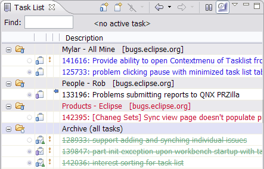
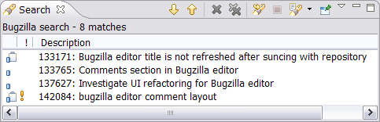
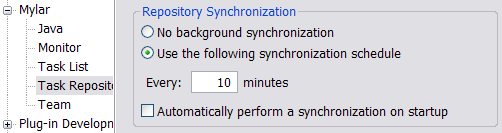
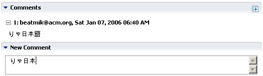
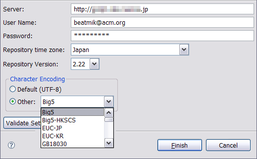
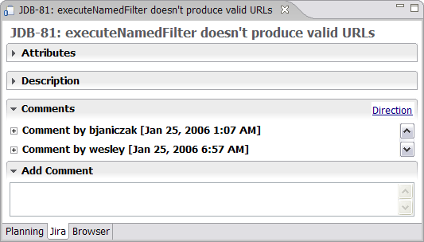

Support for CVS Change Sets with Models

| Release | Resolved | Community Contributions |
| 0.5.2 May 19 |
x reports |
See http://eclipse.org/mylar |
| 0.5.1 April 28 |
34 reports |
Brock Janiczak and Eugene Kuleshov made a very substantial contribution of custom JIRA query support. Gunnar Wagenknecht contributed a patch for RC1 compatibility. |
Also see:
-
New & Noteworthy for Mylar 0.4
- New & Noteworthy for
Mylar 0.3
Changes since...
Instructions
|
Support for CVS Change Sets with Models |
If you are using the model-based change sets, you will notice that
the Mylar Active Change sets work show up with a decoration in the
lower-right corner, and that you can view both incoming and outgoing
change sets at the same time. However, note that there is a
refresh problem on startup, so if a change
set you expect is missing or if you get a There are no more Incoming/Outgoing changes message
in the view on startup toggle the third toolbar button between
All Models and Change Sets (see Platform/Team
bug
142395).
|
|
Daily Progress |
Apply Mylar now helps focus tasks relevant to the work
day by highlighting those scheduled for today (default
is blue) and always showing tasks completed today
(default is green). Repository tasks with incoming
comments are always considered to be interesting.
Note that if you see too many tasks with incoming
notifications you can select them all and click
Synchronize with Repository on the context menu to
catch up. With Apply Mylar enabled sorting is also
based on interest (e.g. bringing overdue tasks to the
top and completed ones to the bottom, then sorting by
priority and description).  |
|
|
|
Apply Mylar to Task Activity |
Similar to how Mylar only shows the resources interesting to a task
when applied to a resource view, the Mylar filter will show only the
tasks relevant to the current work week when applied to the Task
List view. This helps reduce information overload for those
that make heavy use of the Task List by focusing on the tasks
scheduled for this week, incomplete tasks that have become
interesting by being worked on recently, and those that are past
their reminders. To mark a task uninteresting set its reminder
for next week or later. Also note that tasks scheduled for
today are highlighted in blue by default (see Preferences ->
General -> Fonts and Colors to change).
|
|
Editor Auto Close |
Editors now close automatically when the corresponding files become
uninteresting. This ensures that the number of open editors
does not bloat, and that the editors match the context visible in
vies like the Package Explorer. Note that when a context is
activated the Eclipse preference for closing editors will be
disabled, and re-enabled on deactivation if previously set.
|
|
|
|
|
Filter Auto Removal |
When Mylar is applied to a view, the existing filters will be removed from the view. This enables Alt+click browsing of all elements (e.g. .settings folder), and ensures that filters such as Referenced Libraries and Working Sets do not hide elements interesting to a context. The filters are restored when the Apply Mylar button is toggled off. |
|
Support for CVS Change Sets with Models |
If you are using the model-based change sets, you will notice that
the Mylar Active Change sets work show up with a decoration in the
lower-right corner, and that you can view both incoming and outgoing
change sets at the same time. However, note that there is a
refresh problem on startup, so if a change
set you expect is missing or if you get a There are no more Incoming/Outgoing changes message
in the view on startup toggle the third toolbar button between
All Models and Change Sets (see Platform/Team
bug
142395).
|
|
Search Integration |
The Bugzilla search page now only shows attributes relevant to the
selected product. The search results indicate which hits are
in the Task List (via task icon).
Bugzilla search: integrated, improved query page, synchronizations improvements Search and query pages will only show relevant attributes.  |
|
|
|
Bugzilla Connector Uses XML/RDF |
The Bugzilla connector now exclusively uses XML and RDF to run
queries and retrieve bug reports (previously relied on HTML
parsing). This means that it can now be used with many
customized repositories (e.g. RedHat), and that all bug attributes
should be visible and editable (e.g. keywords). Attachments
show up in a table. Synchronization and incoming change notification has been streamlined and only downloads changed reports (refer to Time Zone settings below).  |
|
|
|
Character Encodings and Time Zones |
The Bugzilla Connector now has full support for encodings (note
UTF-8 support was improved in Bugzilla 2.22).
For most installations
the default UTF-8 settings should work, but you can also force the
encoding used in the repository settings page.  The time zone setting must be set correctly for synchronization to only synchronize changed tasks correctly. If you do not set this value your local time zone will be used. Note that the eclipse.org repository is on Canada/Eastern time.  |
|
|
|
Task Context Attachments |
Task contexts can now be attached to Bugzilla tasks and retrieved
into the workspace, via the Task List popup menu. When a task
has a repository context the lower-left repository icon turns purple and
gets taller. Note: not (yet) supported on Bugzilla 2.18.
|
|
|
|
|
End of Support for 2.16 |
This release marks the end of both bugzilla.org and Mylar support for Bugzilla 2.16, so those using the old installation will need to upgrade. |
|
JIRA Editor |
The Eclipse Forms-based JIRA editor provides integrated
editing for JIRA repository tasks. Offline editing
is not yet supported, and saving a comment will result
in it being posted. Note that you must synchronize
your queries before using this editor.  |
|
|
|
Individual Tasks |
Individual JIRA tasks can now be added by key via the Task List. |
|
|
|
Custom Queries |
In addition to using filters stored on the server, custom JIRA
queries can now be added via New Repository Query wizard.
|